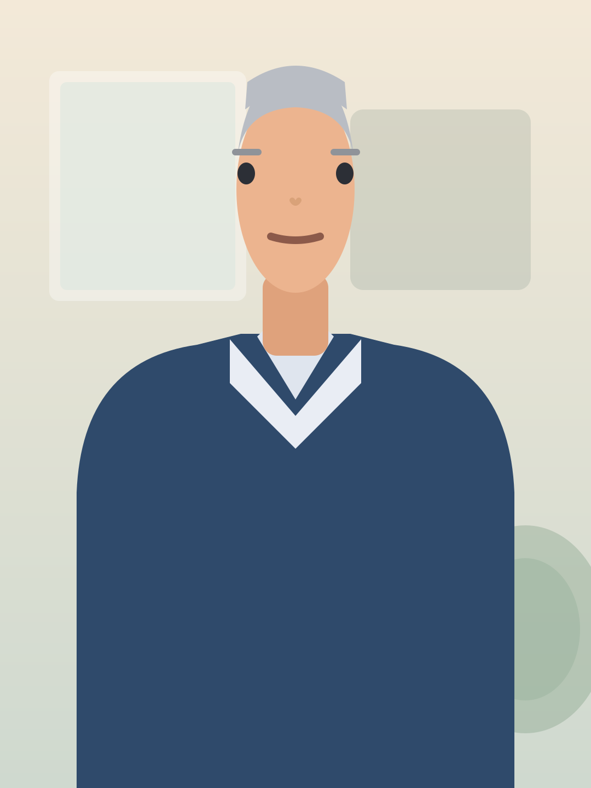

连续答完全部题目（中途不打断），最后统一给每道题打分，并生成 AI 评价与复盘报告。
不选细分方向时，按该大类的通用方向出题。
可多选，选中的题型会影响抽题范围；系统已按你上一步选择的岗位大类给出推荐，可继续增减。
经典文字：专注打字作答；动画互动：AI 面试官动画提问并朗读；摄像头语音：模拟真实视频面试（推荐 Chrome）。

下面是你本场每一道题的作答和参考要点。AI 正在基于你的回答给出整体评价与逐题点评，无需手动打分。